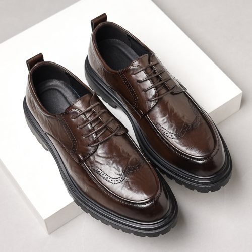
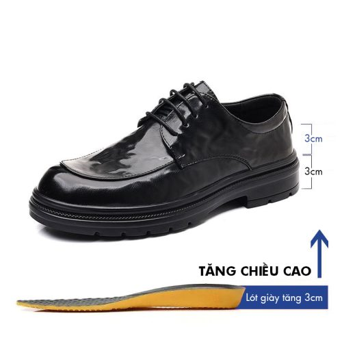

MEN'S FOOTWEAR · QUIET LUXURY
Phong cách không cần
phô trương.
AMO NGUYEN chọn một ngôn ngữ nam tính tinh tế — phom dáng cổ điển, sắc độ trầm và tinh thần hiện đại.
SCROLL
AMO EDIT
Một tủ giày tốt bắt đầu từ
những lựa chọn đúng.
Khám phá các kiểu giày nền tảng cho phong cách nam hiện đại, từ công sở đến cuối tuần.
THE ESSENTIALS
Phong cách tuyển chọn

THE AMO JOURNAL
Quiet Luxury,
theo cách của AMO.
Ít chi tiết hơn. Tập trung nhiều hơn vào tỷ lệ, chất liệu và cách một đôi giày hoàn thiện tổng thể trang phục.
Khám phá Lookbook ↗01
Style Curation
Gợi ý phong cách theo hoàn cảnh sử dụng.
02
Shoe Guide
Cẩm nang lựa chọn phom và kiểu giày nam.
03
Lookbook
Tham khảo cách phối đồ theo tinh thần Quiet Luxury.